Macro II - Fluctuations - ENSAE, 2024-2025
2025-04-01
Les modèles DSGE sont souvent critiqués pour leurs hypothèses peu réalistes.
Exemple :
Macroeconomic Policy in DSGE and Agent-Based Models dans la Revue de l’OFCE
À cet égard, la Grande Récession s’est révélée être une expérience naturelle pour l’analyse économique, montrant l’inadéquation des cadres théoriques dominants. En effet, un nombre croissant d’économistes de premier plan affirment que l’actuelle « crise économique est une crise de la théorie économique » (Kirman, 2010 ; Colander et al., 2009 ; Krugman, 2009, 2011 ; Caballero, 2010 ; Stiglitz, 2011 ; Kay, 2011 ; Dosi, 2011 ; Delong, 2011). Les hypothèses de base des modèles DSGE dominants, par exemple les anticipations rationnelles, les agents représentatifs, les marchés parfaits, etc., empêchent de comprendre les phénomènes fondamentaux à l’origine de la crise économique actuelle.
Mais :
les modèles dominants incorporent en général de nombreux éléments non classiques. Par exemple, les modèles néo-keynésiens intègrent la concurrence imparfaite.
il faut distinguer les modèles dominants de la méthodologie DSGE.
Sous l’hypothèse d’agent représentatif
Est-ce une hypothèse simplificatrice ? Ou est-ce en réalité équivalent à l’agrégation de nombreux problèmes d’optimisation ?
Si oui, il faut une théorie de l’agrégation1…
… qui se brise rapidement (par exemple quand les fonctions d’utilité sont hétérogènes).
Exemple pour le modèle néoclassique / RBC:
Certains économistes ont reconnu très tôt la nécessité de modéliser explicitement l’hétérogénéité.
Économie de Bewley (1977)
Économie de Huggett (1993)
Modèle d’Aiyagari (1994)
Modèle de Krusell et Smith (1998)
Ces modèles exigent des techniques de calcul particulières et étaient mal compris sur le plan mathématique.
2012 Ben Moll donne un exposé à l’IMA (Royaume-Uni).
Économistes et mathématiciens de tout premier plan échangent autour des jeux à champ moyen.
2012 Ben Moll donne un exposé à l’IMA (Royaume-Uni).
Résultat : une nouvelle vague d’articles sur les agents hétérogènes.
PDE Models in Macroeconomics (2014), avec Achdou, Bueary, Lasry, Lions
The Dynamics of Inequality (2016), avec Gabaix, Lasry, Lions
Monetary Policy According to HANK (2018), avec Kaplan et Violante
Monetary Policy According to HANK (2018), de Moll, Kaplan et Violante
A stimulé toute une littérature1
Pourquoi est-il important de modéliser l’hétérogénéité des consommateurs ?
Classiquement, on distingue deux types d’agents :
Ménages ricardiens
Agents qui peuvent réallouer librement leur consommation dans le temps.
Ils ont une forte propension marginale à consommer à partir d’un revenu additionnel.
Les ménages ricardiens choisissent de ne pas consommer davantage aujourd’hui afin de consommer davantage demain.
Ménages keynésiens
Agents dont la consommation de la période courante est limitée par une contrainte de crédit active. Soit ils ne peuvent pas emprunter du tout, soit le montant qu’ils peuvent emprunter est limité aujourd’hui.
Ils ont une forte propension marginale à consommer à partir d’un revenu additionnel.
Les ménages keynésiens consomment aujourd’hui autant qu’ils le peuvent.
L’agent représentatif suppose que tout le monde est ricardien.
Que disent les données ?
Regardons la distribution des PMC en France.1
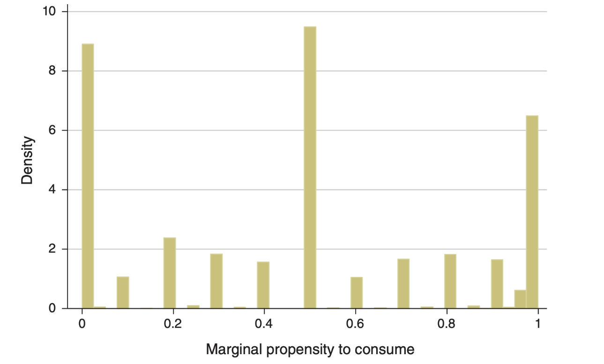
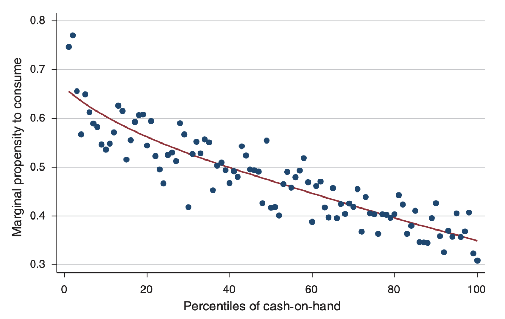
PMC moyenne par percentiles de liquidité disponible
Il semble que la PMC soit bien prédite par le cash-in-hand (montant d’argent restant au ménage après tous les paiements obligatoires).
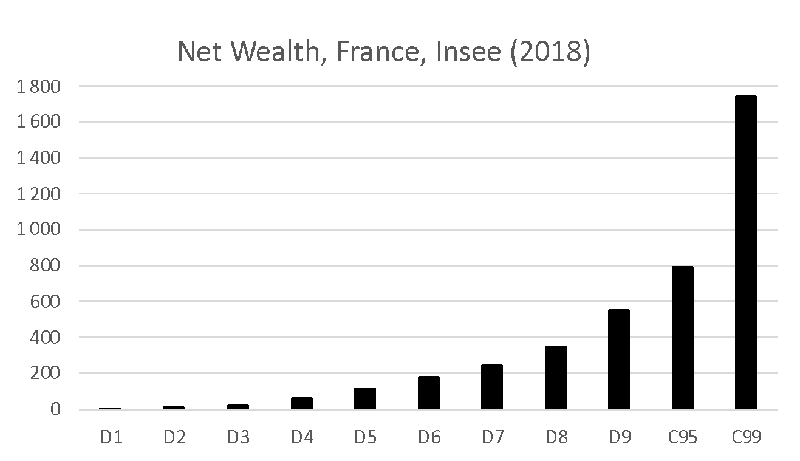
Distribution du patrimoine
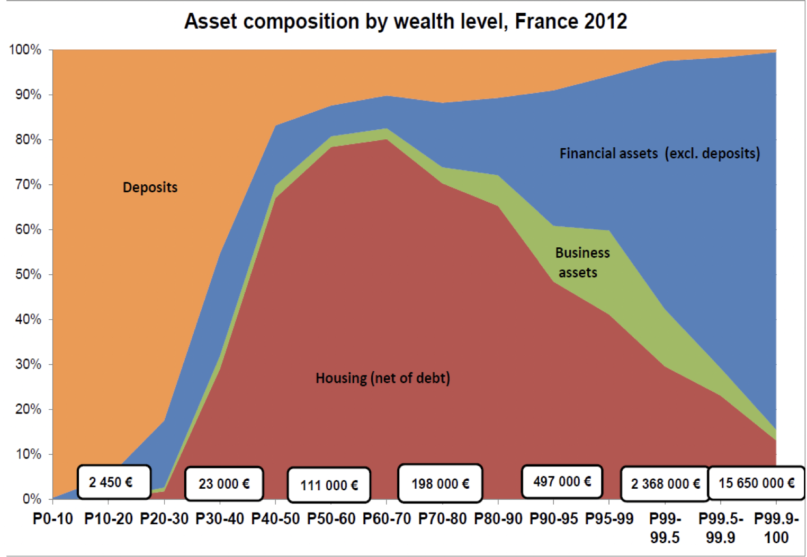
Décomposition du patrimoine
Les agents au milieu de la distribution de patrimoine ont un crédit immobilier dont les intérêts laissent très peu à dépenser après paiements. Ils ont donc un cash-in-hand plus faible, et une propension marginale à consommer plus élevée (que les agents riches).
On vient de voir que les agents situés au milieu de la distribution de patrimoine détiennent une plus grande part de leur richesse sous forme d’actifs illiquides (immobilier).
Inequality, Leverage and Crisis, Kumhof, Rancière, Winant (2015)
La crise financière de 2007 a d’abord été une crise des prêts hypothécaires subprimes.
D’accord, mais d’un point de vue macroéconomique, qu’est-ce qui a alimenté de tels niveaux d’endettement ?
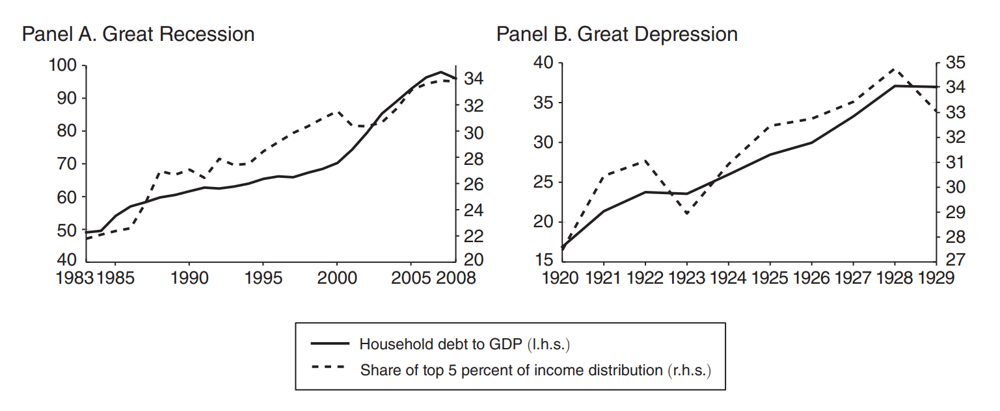
Un schéma similaire est apparu avant la Grande Récession et avant la Grande Dépression :1
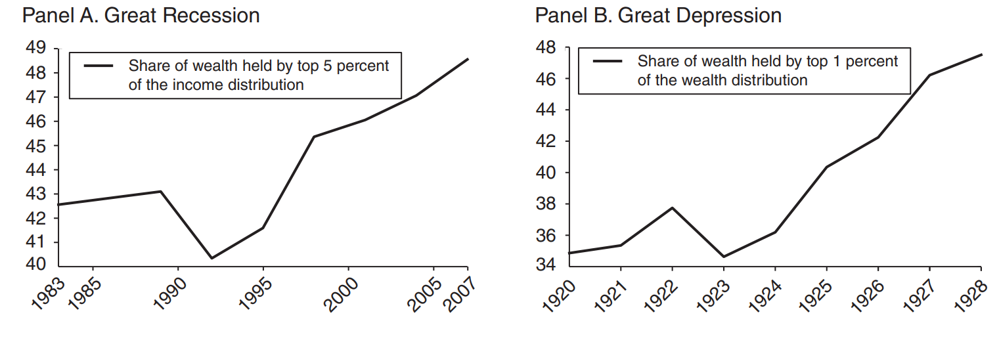
Inégalités de patrimoine
La hausse des inégalités de patrimoine est cohérente.
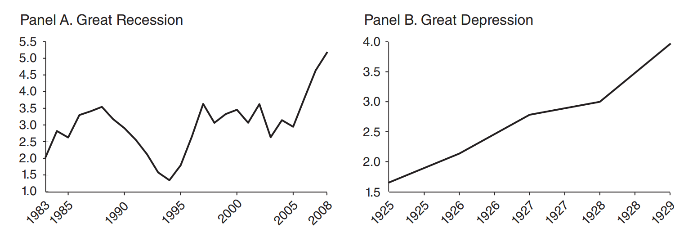
Les mesures économétriques du risque de défaut des ménages 1 augmentent de façon soutenue.
Qu’est-ce qui pourrait relier la hausse des inégalités de revenu à l’augmentation de l’endettement des ménages du bas de la distribution ?
Intuition :
Voyons comment modéliser cela dans un cadre DSGE (en omettant le risque de défaut pour simplifier).
On considère une économie de dotation :
\[y_t = (1-\rho_y) \overline{y} + \rho_y y_{t-1} + \epsilon_{y,t}\]
\[z_t = (1-\rho_z) \overline{z} + \rho_z z_{t-1} + \epsilon_{z,t}\]
Commentaires :
\(z_t\) est la fraction de la production totale reçue par les hauts revenus. Le reste est reçu par les bas revenus.
On suppose qu’il existe une fraction \(\chi\) de hauts revenus.
notre objectif est d’étudier l’effet d’un choc d’inégalités persistant (avec \(\rho_z=1\))
On choisit la fonction d’utilité suivante pour les hauts revenus : \[U_t = E_t \sum_{k\geq0}^{\infty} \beta^k_{\tau} \left\{ \frac{\left(c^{\tau}_{t+k}\right)^ {1-\frac{1}{\sigma}}}{1-\frac{1}{\sigma}} + \varphi \frac{\left( 1+b_{t+k}\frac{1-\chi}{\chi}\right)^{1-\frac{1}{\eta}}}{1-\frac{1}{\eta}} \right\}\]
Consommation : \[c^{\tau}_t = y_t z_t \frac{1}{\chi} + \left(b_{t-1}-b_t p_t\right)\frac{1-\chi}{\chi}\] où \(b_t\) désigne les détentions de dette et \(p_t\) son prix, soit \(1/r_t\).
Condition d’optimalité issue de \(\max U_t\)
\[p_t = \beta_{\tau} E_t\left[ \left( \frac{c^{\tau}_{t+1}}{c^{\tau}_t}\right)^ {-\frac{1}{\sigma}}\right] + \varphi \frac{\left(1+b_t \frac{1-\chi}{\chi}\right)^ {-\frac{1}{\eta}}}{\left(c_t^{\tau}\right)^ {-\frac{1}{\sigma}}}\]
La préférence pour la richesse peut se justifier par :
Intuitivement: les utilités de la consommation et de la richesse sont complémentaires. Si la consommation augmente, les individus veulent détenir plus de richesse. C’est ce qui ce passe lorsque le revenu augmente de manière permanente: la consommation augmente mécaniquement.
Remarque: sans la préférence pour la richesse, la condition \(c_t = c_{t+1}\) implique qu’une augmentation permanente du revenu entraîne une augmentation équivalente de la consommation, ce qui conduit à une propension marginale à consommer de 100 % après un choc de revenu permanent.
On peut réécrire la condition d’Euler à l’état d’équilibre:
\[ \frac{\color{blue}{p}-\beta_\tau}{\varphi} = \frac{\left(\overline{y}\,\overline{\color{red}{z}}\,\frac{1}{\chi}+\overline{\color{green}{b}}(1-\color{blue}{p})\frac{1-\chi}{\chi}\right)^{\frac{1}{\sigma}}}{\left(1+\overline{\color{green}{b}}\frac{1-\chi}{\chi}\right)^{\frac{1}{\eta}}} \]
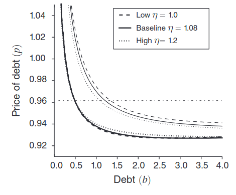
La condition montre l’offre de prêt \(\overline{\color{green}{b}}\) à l’équilibre (i.e. l’épargne des hauts revenus) en fonction du taux s(\(r=1/\color{blue}{p}\)).
Elle implique aussi une augmentation de l’offre de prêt d’équilibre lorsque la part \(\overline{\color{red}{z}}\) des hauts revenus augmente (déplacement vers la droite de la courbe d’offre de prêt).
Les bas revenus sont standards :
\[V_t = E_t \sum_{k \geq 0}^{\infty} \beta^k_b \left( \frac{\left(c_{t+k}^b\right)^ {1-\frac{1}{\sigma}}}{1-\frac{1}{\sigma}} \right)\]
Contrainte budgétaire :
\[c^b_t = y_t(1-z_t)\frac{1}{1-\chi} + \left(b_t p_t - b_{t-1}\right)\]
Condition d’optimalité issue de \(\max V_t\)
\[p_t = \beta^b E_t \left[ \left( \frac{c_{t+1}^b}{c_t^b}\right)^{-\frac{1}{\sigma}} \right]\]
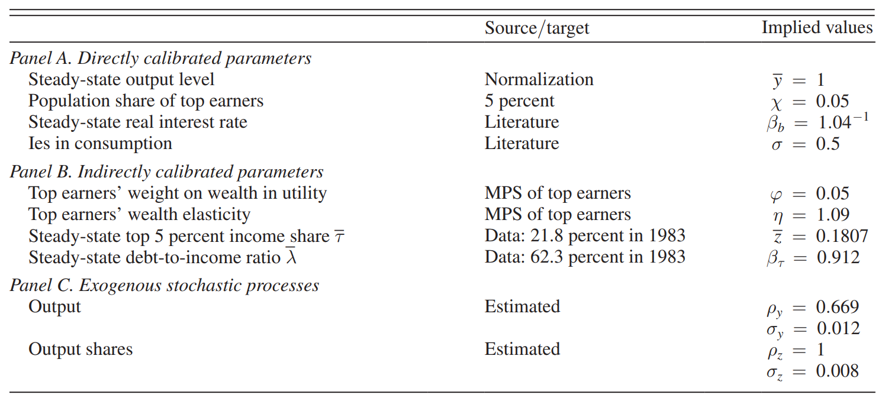
Calibration
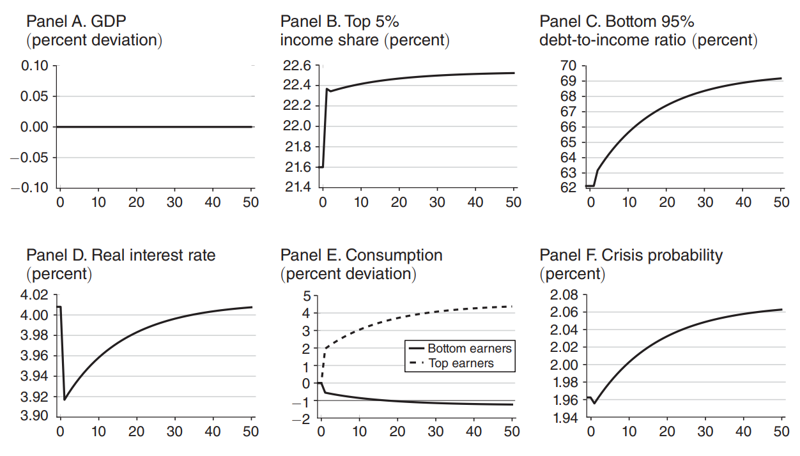
Choc d’inégalités
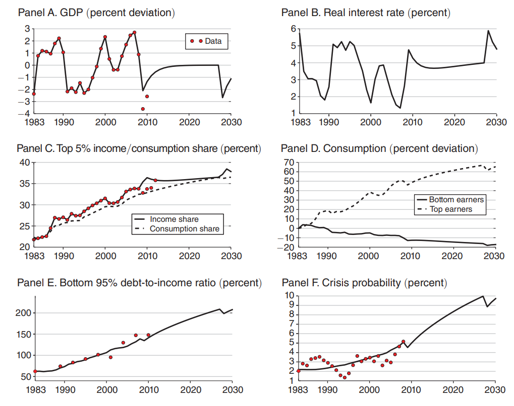
Simulation pseudo-historique
Conclusion
Dans la simulation, nous utilisons les valeurs historiques des chocs exogènes (production et inégalités).
On reproduit assez bien l’évolution du ratio dette/PIB de 1983 à 2010:
Le modèle entier contient aussi un mécanisme de défaut des ménages, que l’on a omis ici.
Discussion: quel est le pouvoir prédictif du modèle ?
Comment modéliser les différences de PMC ?
Spécifier plusieurs types d’agents :
En endogénéisant la contrainte d’emprunt
En introduisant une préférence pour la richesse